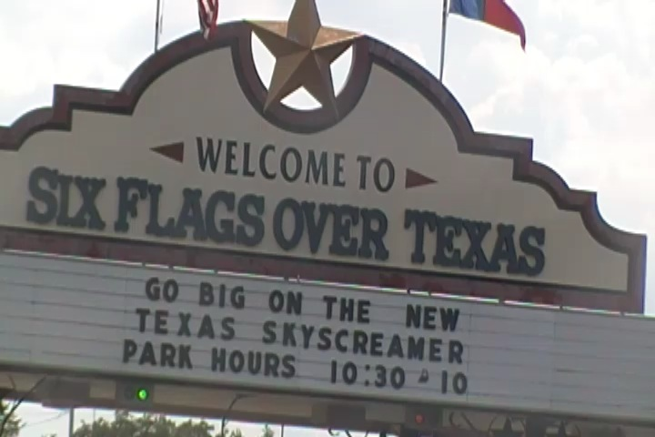
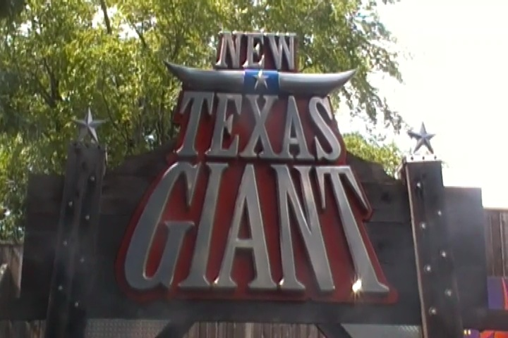
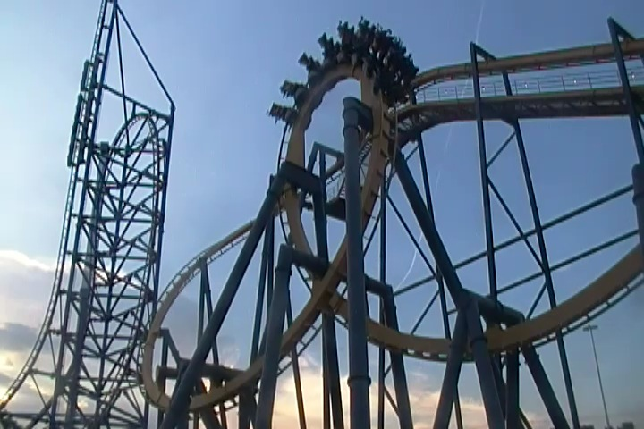
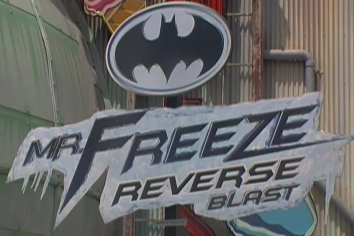
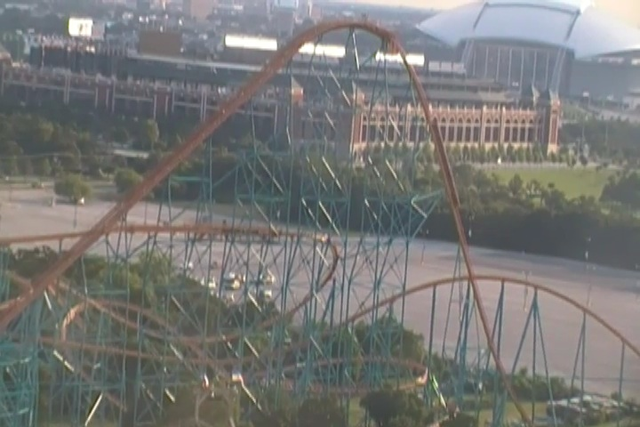
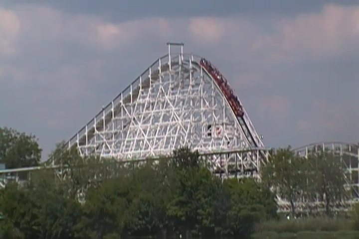
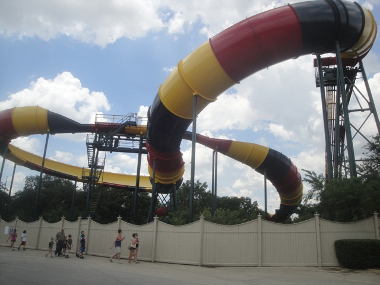
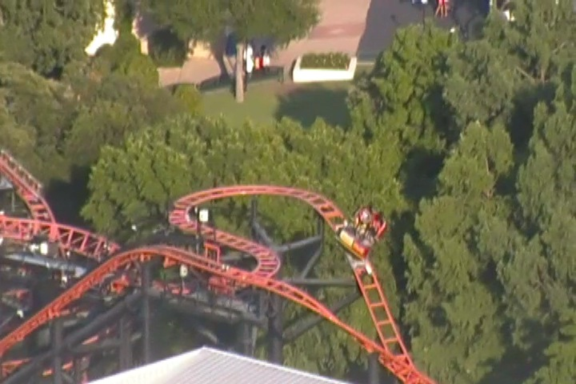
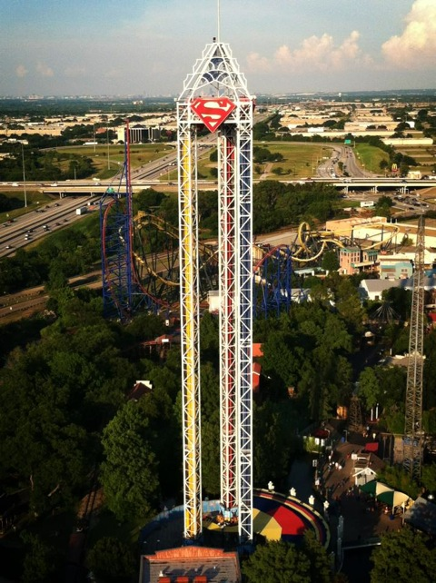
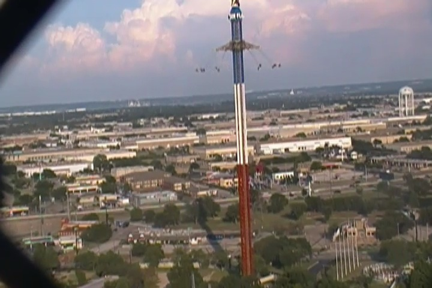

| |
Six Flags Over Texas Review

Six Flags Over Texas is a park that people really seem to like. And from a first glance, you can sort of see why. The roller coaster selection is really good, starring an RMC, a really good-looking Schwarzkoph, and other really fun rides. And on top of all of that, Six Flags Over Texas has a rich history as the first ever Six Flags park. And the whole atmosphere just seems really cool. And while I do believe that at one point, Six Flags Over Texas was a really great park. When I was there, it SUCKED. It REALLY sucked. I mean, the operations. GOOD F*CKING GOD!!! THE OPERATIONS ARE JUST AWFUL!!! The operators were all really slow, seemed like they didn't want to do their job at all, and they just refused to get all the trains out. With a gold flash pass, I was barely able to get on all of the open coasters. When I was waiting in line for the Texas Skyscreamer, I waited for 30 minutes, and it only cycled 3 times within those 30 minutes. It was so bad that even with the park closed, I got out of line because I just couldn't tolerate it and would rather get a head start on our suicide night to Branson, MO. And on top of all that, I encountered many employees being rude, stupid rules were being enforced, and the very next day, a woman fell out of your star attraction. That just wreaks of laziness and not giving a sh*t. The whole park wreaked of that. It just all didn't work out. Yeah, it has some good coasters, but there's just so much wrong with the park that...UGH!!! JUST UGH!!!
Rollercoasters
There is a link to a review of all the Rollercoasters at Six Flags Over Texas.
Please keep in mind that there is no review of Shockwave, Joker, or Aquaman: Power Splash because it either was closed when I last visited or it didn't exist when I last visited. ='(
Top Coasters
New Texas Giant Review

Really Good Coasters
Batman the Ride Review

Mr Freeze Reverse Blast Review

Titan Review

Decent Coasters
Judge Roy Scream Review

Family Coasters
La Vibora Review

Pandemonium Review

Runaway Mine Train Review

Runaway Mountain Review

Kiddy Coasters
Mini Mine Train Review
Flat Rides
Here are the reviews of all the Flat Rides at Six Flags Over Texas. Now let's talk about the only flat ride I rode at Six Flags Over Texas. Superman: Power of Tower. This is the parks S&S Tower, and it is freaking AWESOME!!! Aside from Dr. Doom at the Universal Orlado Resort, this is my favorite S&S Tower. And it's solely because of the rides program. It's a really big S&S Tower, and when it comes to the program. Is it a Space Shot or a Turbo Drop? Which one should I choose? Well guess what? You get both!! And both are super fun. It's just a ton of fun to launch up to the top, bounce up and down, only to rise up, and then drop before bouncing some more. Man, it's just a ton of fun. Now let's get to the other flat rides, starting with the only other flat ride that people take notice of. The Texas SkyScreamer. And for obvious reasons. It's a 400 ft Starflyer!! Yeah. That's just freaking insane. Now sadly, I never got to ride the ride thanks to just how HORRIBLE the operations are, which helps contribute to just how much the park pisses me off. I know I've gone over this a bunch of times, but I just can't help it. I mean, 3 cycles in 30 minutes!? GAH!!! THAT IS UNACCEPTABLE!!! But hey, hanging up 400 ft in the air, getting a great view of Texas, near Fort Worth and Dallas, hoping that will provide a really crazy fun ride. As for the rest of the flat rides, they're decent. The park's other flat rides include a giant frisbee, this really funky flipping thing that looks really cool, a weird sort of swinging enterprise that looks cool, troika, a looping starship (AWFUL!!!), a wipeout, a breakdance, a pirate ship, chairswings, teacups, a scrambler, and a carousel.

This is definetly the best program of any S&S Tower ever built.

"Hey. If I stay up here forever, I can completely avoid all the terrible SFOT operations." =)
Dark Rides
Yes. Since my last visit, Six Flags Over Texas decided to get a dark ride. Hey, I wanted Six Flags to get more dark rides, so this should be a good addition. And I heard good things about all the Justice League dark rides. If the dark rides really are that good, then this should be ecstatic news. Now I never rode the ride, but I did ride a Justice League back at my home park. And I REALLY liked it. However, I have heard that the SFMM one is for some reason, the best one and the other Justice Leagues aren't as good. Not sure why Magic Mountain would get a special one. But even so, this should be a good addition to Six Flags Over Texas. But I don't have hope that Six Flags adding this ride means that they're going to fix the real problem with the park, the operations. Just keep fingers crossed. And if not, well...at least they have a cool dark ride now.
Water Rides
I didn't ride any of the water rides at Six Flags Over Texas. And the water rides...they don't seem to be THAT good. They have a small log flume, a rapids ride that seems average, and a shoot the chutes ride that is small, and themed to Aquaman. None of that is very impressive. That doesn't stand out. But Texas does get very hot. So you may not care about water rides standing out and just want to cool off. Well, I'm not sure if these water rides get you that wet. You'll just have to ride and find out.
Water Park
Six Flags Over Texas does have a nearby water park, but it's sort of its own thing and requires seperate admission. And nothing at the water park seems to stand out. If you want to check it out, enjoy. =)
Dining
Like most parks in the Six Flags chain, Six Flags Over Texas has nothing spectacular when it comes to its dining options. We just ate at a nearby Cracker Barrel, and yeah. I do like Cracker Barrel. But yeah. Looking at the dining options online, it just seems like the same old theme park food, only with a little bit of Texas BBQ added on.
Theming and Other Attractions
Here are the reviews of all the other stuff at Six Flags Over Texas. Now, there's very little theming in the park. But also keep in mind, it's a Six Flags park, so by Six Flags standards, the theming is actually one of the better bits in the park. Hell, the Six Flags name comes from the fact that Six Flags Over Texas, the original Six Flags park, was originally themed to six different nations, hence the Six Flags. As for the setting, meh. It's not that good. It's just Arlington, TX. Which is not that great a city. So I'm guessing that view from the Texas Skyscreamer isn't all that good. Now as for other stuff to do in the park, I'm sure there is other stuff to do in the park. But honestly...the operations are so bad here that you'll be spending all your time waiting in line, even with a Fastpass. Plus, I just have little faith in Six Flags Over Texas offering that much more cool stuff that isn't a ride.
In Conclusion
Six Flags Over Texas is a really frustrating park as I see the potential for the park to be good. I see the potential for the park to be REALLY good. They've got some really good coasters, including a very fun RMC, what I presume to be a really good Schwarzkoph, a 400 ft Star Flyer, what I presume to be a really good dark ride. And on top of that, you've got the history of being the first Six Flags park, and this should be set as one of the better parks in the Six Flags chain and a great place to spend a day and just have a great time. But unfortunetly, the operations. They just sour my views on the park. It's just...GAH!!! I'm sorry, but the operations just make it that bad. It makes me want to avoid returning to the park, despite the fact that I still have a great Schwarzkoph Looper to ride, a Joker clone, a Power Splash, and a really fun RMC that I want more rerides on. I just don't want to deal with those operations again. It's just such a pain in the ass. Six Flags Over Texas needs a lot of tender loving care because I can see the park wanting to shine. It's just so frustrating to visit. I really hope that Six Flags Over Texas cracks down on their management, fires whoevers in charge, and brings back someone along the lines of Jay Thomas, because I want to like Six Flags Over Texas. I would love for it to be up there as the original Six Flags park and one of the best in the chain. But in order for that to happen, they have to be a lot more friendly, and run the park a lot more efficiently so that the lines actually move. However, some good news. Some friends visited the park recently, and from what they've said, the park has gotten its sh*t together. That's something that really makes me happy to hear. If it's true, my thoughts on the park will skyrocket. Kind of want to revisit just to see if its true. Hey, all those rides, plus I have a friend who lives in Dallas. Cheap Frontier flights, Hmm. But just be careful just in case the operations are still horrendous.
Enthusiast FAQs.
*Are there kiddy coaster restrictions? - Yes and No. You can ride Mini Mine Train. However, Wile E. Coyote's Grand Canyon Blaster does require a kid for you to ride (I assume. Maybe you can ride it and the operator just made the rule up himself because he is anti-credit whoring, and yes, those people totally exist. I witnessed it myself at Six Flags Magic Mountain on Canyon Blaster, but I wouldn't expect to get the credit).

Tips
*GET THE GOLD FLASHPASS!!!! YOU NEED IT!!! YOUR DAY WILL BE HELL WITHOUT IT!!!
*Actually, on second thought, get the Platinum Flashpass, solely so you can get on New Texas Giant and the Texas Skyscreamer (Those only work for one ride on Platinum Flash Pass. They aren't on the Gold Flash Pass at all).
*Be prepared to stand in some long lines. Yes, even with the Flashpass, there are still incredibly long lines.
*Bring your Ipod/Iphone/Ipad/Whatever you use for entertainment. It'll certainly help while in those lines.
*Get on New Texas Giant.
*I can't stress this enough. GET THE F*CKING PLATINUM FLASH PASS!!!
*Have Fun!!!!
Location
Arlington, Texas, USA
Theme Park Category:
Parks that need SERIOUS Improvement
Last Day Visited
July 18, 2013
Video
I didn't have enough time to shoot a Six Flags Over Texas video, primarily because of all the frustration with the park. I have enough footage to make a clusmy, crappy video, but yeah. I don't want that.
Complete Update List
2013
Texas/Rocky Mtn Trip
Here's a link to the parks website.
Home
|